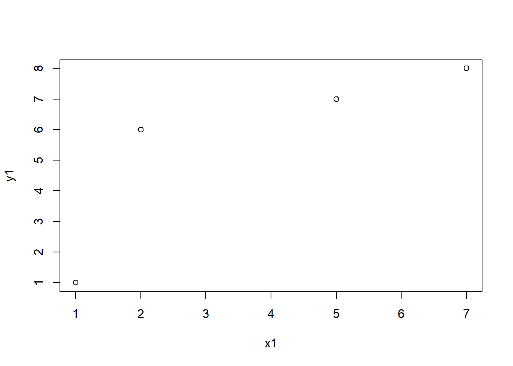
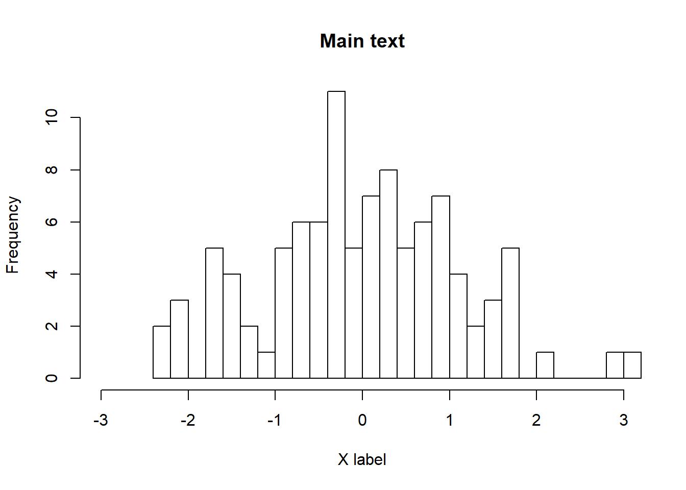
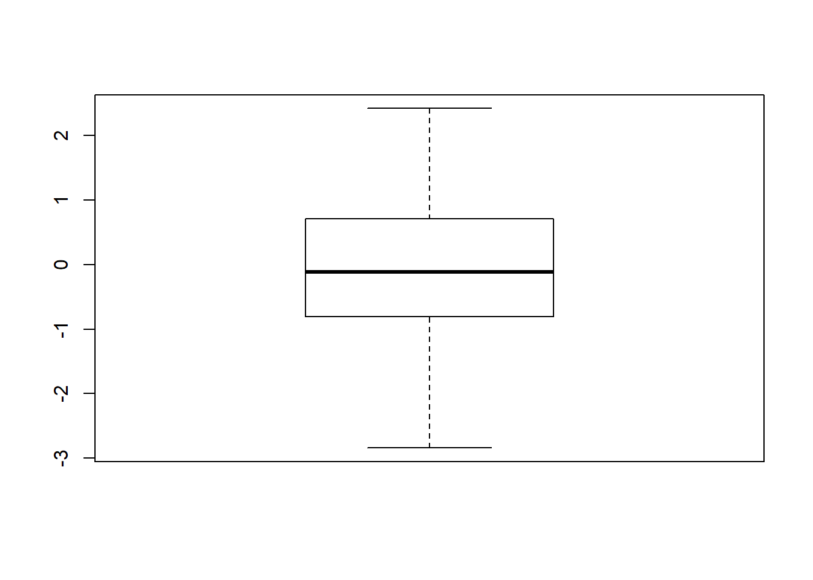
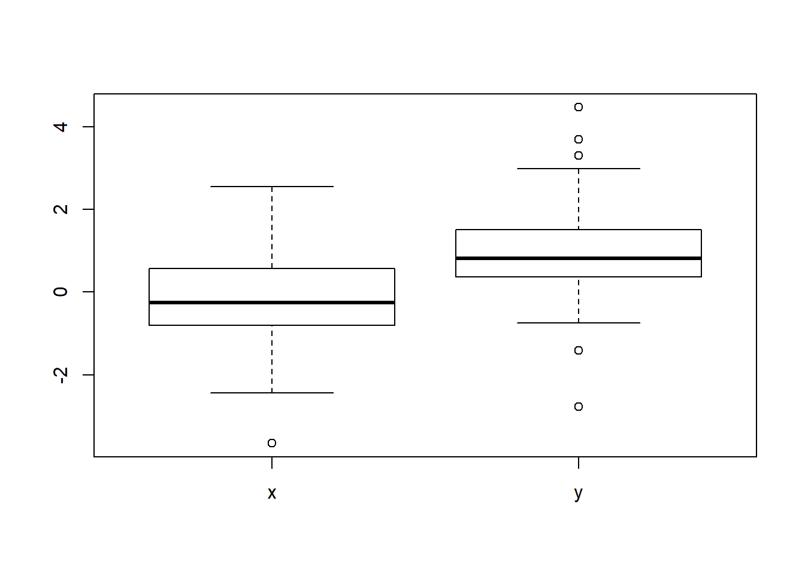
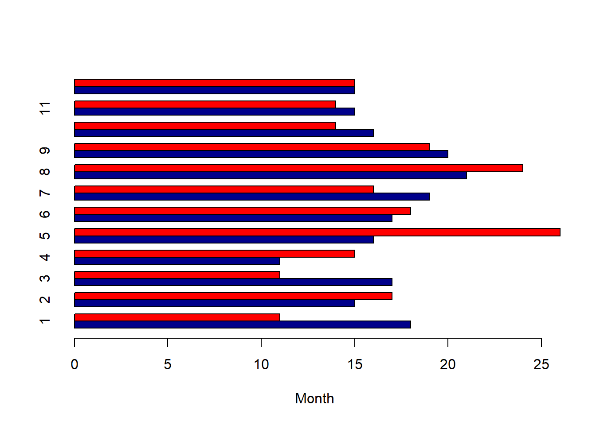
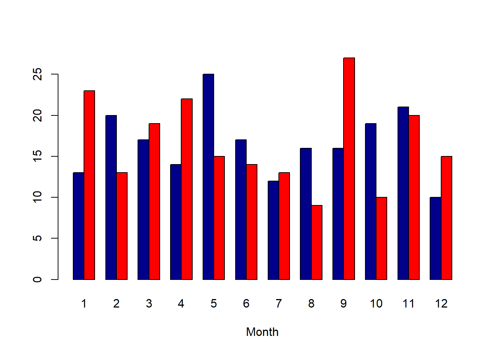
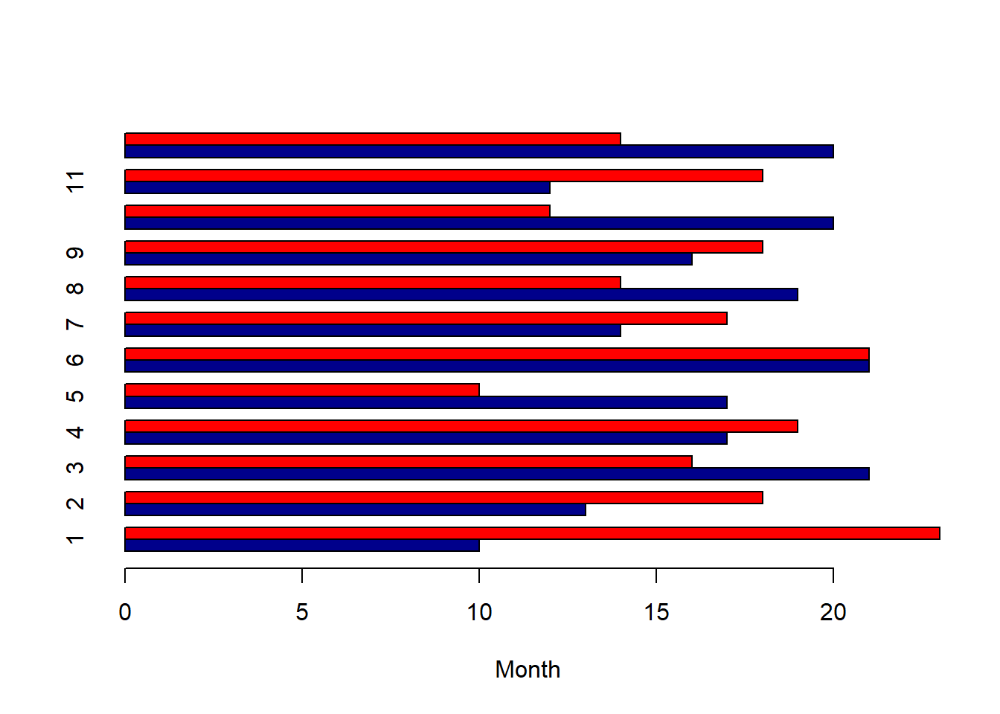
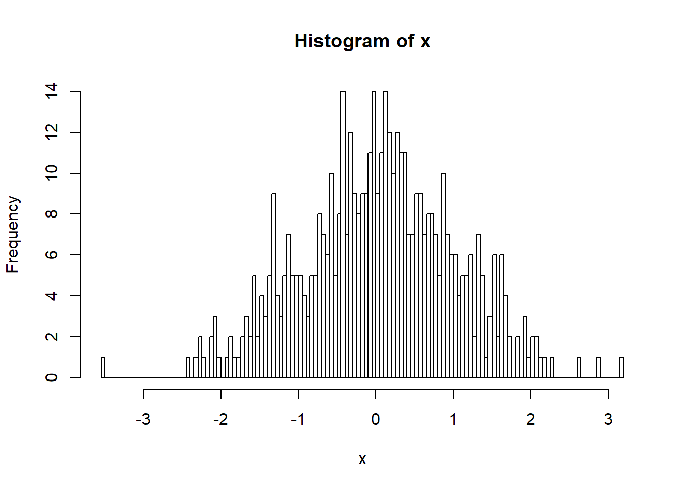

6 Lecture 05 - Multiple plate reader file
강의노트와 실습용 엑셀파일은 다음을 참고 하세요
이번 시간에는 R에서 제공하는 기본 그래프 함수들을 간략하게 알아보고 지난 3번째 강의에서 간략하게 실습했던 multiple plate reader (\(Victor^{TM}\), PerkinElmer, Inc.) 장비를 통해 측정된 데이터를 읽어와서 분석하기 위한 함수를 작성해 보겠습니다. 생물학 실험에서 샘플의 실험 조건이 다양하게 달라지고 96 well plate상에서 측정된 위치 등이 수시로 바뀌는 등의 상황에 의존적이지 않고 해당 장비를 사용할 경우에 한해서는 일반적으로 사용할 수 있는 함수를 만드는 것이 목표 입니다.
6.1 File I/O 파일 입출력
먼저 지난 시간에 배웠던 파일 입출력 코드를 보겠습니다. write.table 함수는 택스트 파일로 해당 데이터를 저장합니다. ?write.table 도움말을 보시면 quote=TRUE로 모든 값들을 따옴표가 있는 문자로 저장합니다. 따라서 숫자형으로 저장하기 위해서는 quote=F를 명시해야 하며 read.table은 테이블 형태로 파일 내용을 읽어오며 반환되는 오브젝트 타입은 기본적으로 data.frame 입니다.
x1 <- c(1,2,5,7)
y1 <- c(1,6,7,8)
xy<-data.frame(x1, y1)
write.table(xy, file="table_write.txt", quote=F)
myxy <- read.table(file="table_write.txt")
myxy## x1 y1
## 1 1 1
## 2 2 6
## 3 5 7
## 4 7 8class(myxy)## [1] "data.frame"names(myxy)## [1] "x1" "y1"6.2 plot 산포도
R에서 plot 함수는 가장 기본이 되는 그래프 함수 입니다. 아래는 산포도를 그려주는 코드로서 myxy가 두 개의 변수(x1과 y1)를 가지고 있으므로 아래 명령들은 모두 같은 그림을 그려주게 됩니다. 가장 마지막 명령은 formula를 사용한 plot으로 첫번째 파라메터 인자로 formula 타입이 전달되면 plot.formula 함수가 실행되며 x, y 값이 전달될 경우 plot.default 함수가 수행됩니다. R에서는 이렇게 전달되는 파라메터의 타입에 따라서 다른 기능을 하는 함수를 Generic function 이라고 합니다.
plot(myxy)
plot(myxy$x1, myxy$y1)
plot(x=myxy$x1, y=myxy$y1)plot(y1~x1, data=myxy)
6.3 hist 히스토그램
hist는 데이터들의 분포를 히스토그램으로 그려주는 함수입니다. 히스토그램은 데이터들이 갖는 값을 특정 구간으로 나누고 각 구간에 해당하는 데이터가 몇 개인지 빈도수를 계산하여 막대그래프로 보여주는 함수 입니다.
x <- rnorm(100)
hist(x, br=20, xlim=c(-3,3), main="Main text", xlab="X label")
6.4 boxplot 상자그래프
boxplot은 데이터의 여러가지 대표값 (중간값 median, 첫번째 사분위수 1st quantile, 세번째 사분위수 3rd quantile, 최소 minimum, 최대값 maximum) 등을 한눈에 볼 수 있도록 만들어놓은 그래프 입니다. data.frame 타입의 오브젝트에 대해서 boxplot을 그릴 경우 여러 변수의 데이터들의 분포를 한눈에 비교할 수 있읍니다.
boxplot(x)
y <- rnorm(100, 1, 1)
#boxplot(y)
xy <- data.frame(x, y)
boxplot(xy)
class(xy)## [1] "data.frame"6.5 barplot 막대그래프
막대그래프는 기존 수업에서도 실습을 진행한 그래프로 각 값들을 막대 형태로 나란히 배치하여 서로 비교가 용이하도록 만든 그래프 입니다. table 함수는 같은 값을 갖는 데이터들이 몇 개나 있는지 테이블을 만들어주는 함수 입니다. rbind는 두 변수를 row를 기준으로 붙여주는 역할의 함수입니다.
x <- sample(1:12, 200, replace = T)
tab_x <- table(x)
y <- sample(1:12, 200, replace = T)
tab_y <- table(y)
tab_xy <- rbind(tab_x, tab_y)
#barplot(tab_xy)
#barplot(tab_xy, beside = T)
#barplot(tab_xy, beside = T, col=c("darkblue","red"))
barplot(tab_xy, beside = T, col=c("darkblue","red"), xlab="Month")
barplot(tab_xy, beside = T, col=c("darkblue","red"), xlab="Month", horiz=TRUE)
6.6 other examples 그래프 예시
위 예제들에서 사용한 high level function들을 low level function (lines, points, ablines, axis 등)들과 함께 사용함으로써 원하는 도표 대부분을 그려낼 수 있습니다. 최근 널리 사용되는 ggplot2 패키지를 이용한 그래프 사용법 강의에서는 오늘 배우는 그래픽 명령어는 거의 사용하지 않습니다. 그러나 위 함수들은 R의 기본 그래프 함수들로서 단순한 도표에서부터 복잡한 그래픽까지 구현할 수 있는 다양한 유연성을 제공하므로 기본적인 사용법을 정확히 이해하는 것이 필수입니다.
아래 도표는 평균 0, 분산 1인 분포에서 500개의 랜덤한 수를 뽑아 x에 저장하고 x의 분포를 히스토그램으로 표현한 것 입니다. 두 번째 그래프는 앞서 생성한 x 값들과 상관성이 있는 y값들을 (x에 2를 곱하고 평균 5, 분산 1인 랜덤하게 뽑힌 수를 노이즈로 더함) 생성하고 모든 1000개 값들의 분포를 그린 히스토그램 입니다. 또한 density 함수와 lines 함수를 조합하여 확률밀도함수 커브를 그려 넣었습니다. 이 때 hist 함수에 probability=T 옵션을 넣어 y scale을 확률밀도함수의 y 스케일과 맞춰주어 같은 화면에 그려지도록 했습니다.
x <- rnorm(500)
hist(x, 100)
y <- 2*x + rnorm(500, mean=5, sd=1)
hist(c(x,y), br=100, probability = T)
lines(density(c(x,y)))
아래는 위에서 생성한 x, y 값의 산포도를 그리고 x축과 y축 범위를 xlim, ylim 파라메터로 조절했습니다. ?pch 도움말을 참고하여 다양한 포인트 모양을 선택할 수 있으며 x 값이 0 보다 작은 경우의 index를 뽑아 해당되는 x 값들과 그 값들의 짝이 되는 y값들에 대해서만 다시 포인트 그림을 red 색상으로 그려 넣었습니다. lm 은 linear model의 약자로 회귀 곡선을 구할 때 사용하는 함수이며 이 함수를 abline과 조합하여 회귀 직선을 그릴 수 있습니다.
plot(x,y, xlim=c(-5, 5), ylim=c(-5, 15))
plot(x,y, xlim=c(-5, 5), ylim=c(-5, 15), pch=3)
idx <- which(x<0)
points(x[idx], y[idx], col="red")
abline(lm(y~x))